Publications
Links to publications are available from the following databases.
Accompanying code is available on GitHub.
Publications are also available for download via the links below.
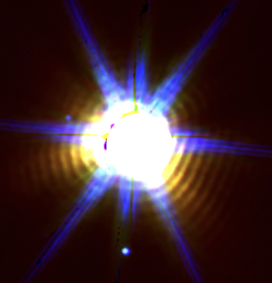
Carbon-rich dust injected into the interstellar medium by Galactic WC binaries survives for hundreds of years.
The Astrophysical Journal (2025)
N. D. Richardson et al.
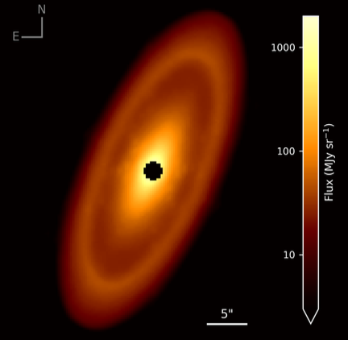
A PR drag origin for the Fomalhaut disk’s pervasive inner dust: constraints on collisional strengths, icy composition, and embedded planets
Monthly Notices of the Royal Astronomical Society (2025)
M. Sommer, M. C. Wyatt, Y. Han
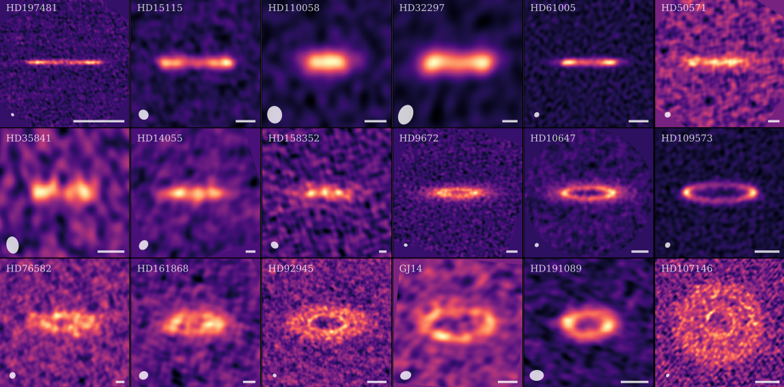
Recovering the structure of debris disks non-parametrically from images
Monthly Notices of the Royal Astronomical Society (2025)
Y. Han, M. C. Wyatt, S. Marino
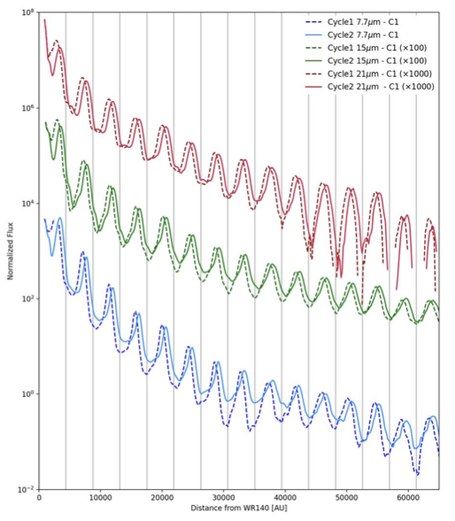
Dynamic imprints of colliding-wind dust formation from WR140
The Astrophysical Journal Letters (2025)
E. P. Lieb et al.
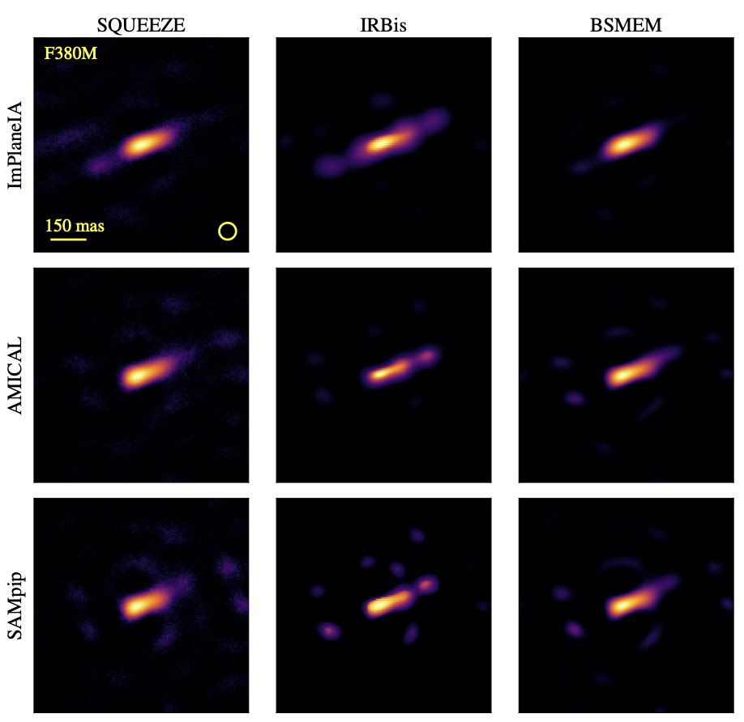
A first look with JWST aperture masking interferometry (AMI): resolving circumstellar dust around the Wolf-Rayet binary WR 137 beyond the Rayleigh limit
The Astrophysical Journal (2024)
R. M. Lau et al.
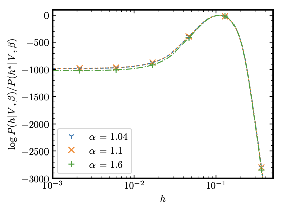
Deprojecting and constraining the vertical thickness of exoKuiper belts
Monthly Notices of the Royal Astronomical Society (2023)
J. Terrill, S. Marino, R. A. Booth, Y. Han, J. Jennings, M. C. Wyatt
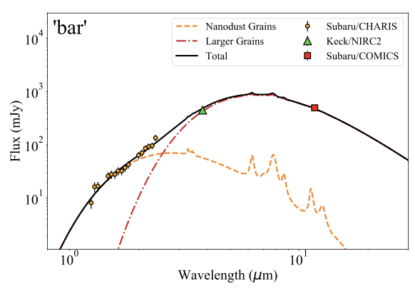
From dust to nanodust: resolving circumstellar dust from the colliding-wind binary Wolf-Rayet 140
The Astrophysical Journal (2023)
R. M. Lau et al.
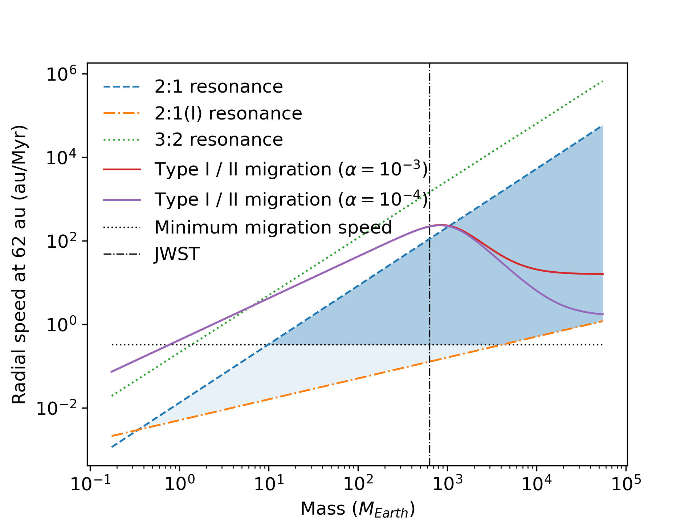
Has the dust clump in the debris disk of Beta Pictoris moved?
Monthly Notices of the Royal Astronomical Society (2023)
Y. Han, M. C. Wyatt, W. R. F. Dent
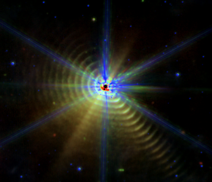
Nested dust shells around the Wolf–Rayet binary WR 140 observed with JWST
Nature Astronomy (2022)
R. M. Lau, M. J. Hankins, Y. Han et al.
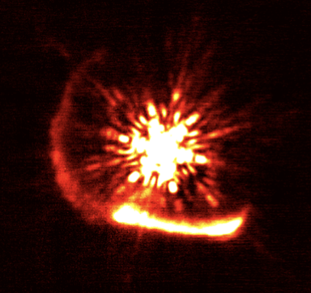
Radiation-driven acceleration in the expanding WR140 dust shell
Nature (2022)
Y. Han, P. G. Tuthill, R. M. Lau, A. Soulain.
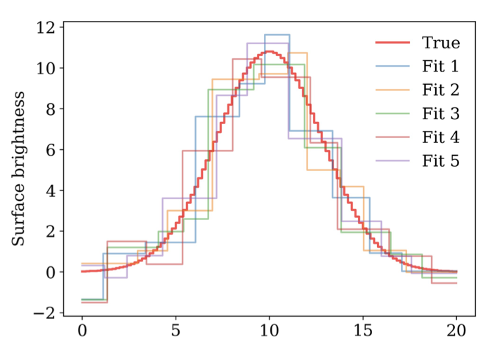
Rave: a non–parametric method for recovering the surface brightness and height profiles of edge–on debris disks
Monthly Notices of the Royal Astronomical Society (2022)
Y. Han, M. C. Wyatt, L. Matrà
Relationships between lognormal distributions of neural properties, activity, criticality, and connectivity
Biological Cybernetics (2021)
P. A. Robinson, X. Gao, Y. Han
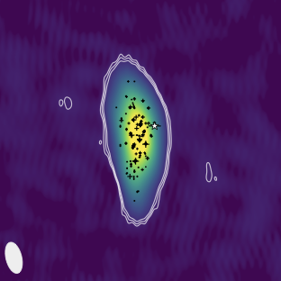
AU-scale radio imaging of the wind collision region in the brightest and most luminous non-thermal colliding wind binary Apep
Monthly Notices of the Royal Astronomical Society (2021)
B. Marcote, J. R. Callingham, M. De Becker, P. G. Edwards, Y. Han, R. Schulz, J. Stevens, P. G. Tuthill
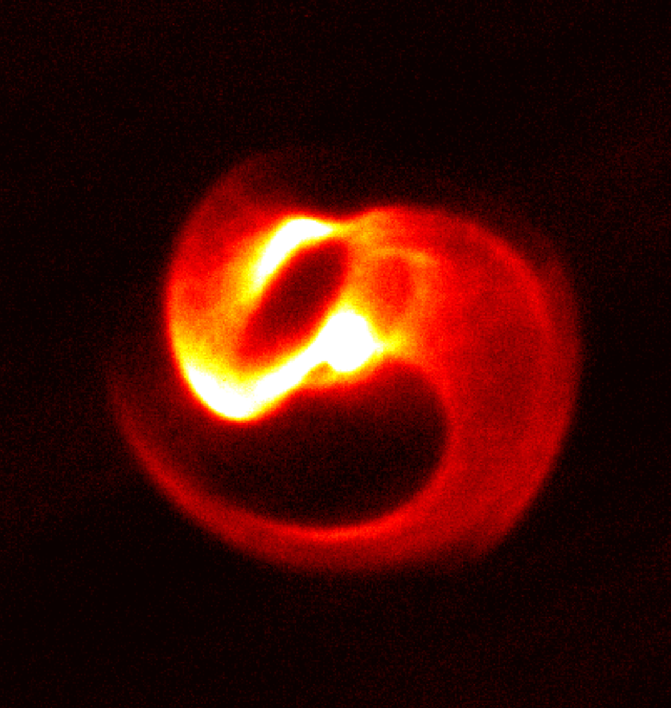
The extreme colliding-wind system Apep: resolved imagery of the central binary and dust plume in the infrared
Monthly Notices of the Royal Astronomical Society (2020)
Y. Han, P. G. Tuthill, A. Soulain, J. R. Callingham, P. M. Williams, P. A. Crowther, B. J. S. Pope, B. Marcote
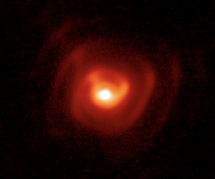
Resolving periodic spirals and shadows from the Wolf-Rayet dust factory WR112
The Astrophysical Journal (2020)
R. M. Lau, M. J. Hankins, Y. Han et al.
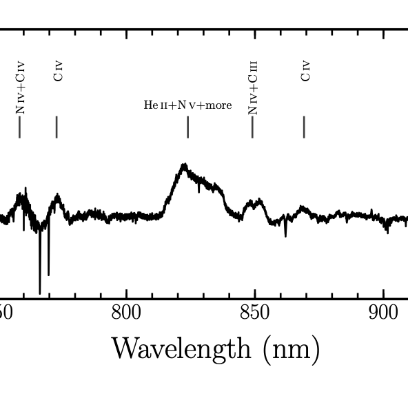
Two Wolf-Rayet stars at the heart of colliding-wind binary Apep
Monthly Notices of the Royal Astronomical Society (2020)
J. R. Callingham, P. A. Crowther, P. M. Williams, P. G. Tuthill, Y. Han, B. J. S. Pope
Transitions in information processing dynamics at the whole-brain network level are driven by alterations in neural gain
PLOS Computational Biology (2019)
M. Li, Y. Han, M. J. Aburn, M. Breakspear, R. Q. Poldrack, J. M. Shine, J. T. Lizier